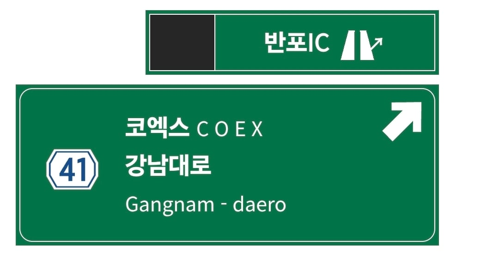

다 도착했는데 차막혀서 빡치는 곳임 ㅅㅂ.....

다 도착했는데 차막혀서 빡치는 곳임 ㅅㅂ.....
버스전용차로에서 어떻게든 나가는 길을 만들어야 할 거 같은데
저번에 비와서 센트럴시티 침수된날
저 앞에서 나가는데 한시간반걸림
고맙다 고속버스 예매해야하는데 까먹고 있었다가 이 글 보고 예매했다
아 맞다 원더리벳 셔틀버스 예매 와드
야너두?
반포IC, 삼호가든 사거리 ㄹㅇ 개빡치는 구간임
성모병원 사거리 ~ 삼호가든 사거리 구간 정체 JOAT 그 자체.. 씨바 차가 안빠져서 대법원 ~ 반포대교 남단까지 존나 막힘
아씨 예전 생각나서 진짜 끔찍하네...
여자친구 직장이 반년전까지만해도 도곡이라 그쪽 겁나 자주갔는데 지옥임 진짜로
쩌 눈앞에 현대 기아 건물보이는 양재가 보이는순간에 내 앞에 한가득한 차들 보고있으면 야마가 존나 돔.
개씹 버스때문에 막히는거라고 거기
방금까지 1차로에서 설사 참는 운전자 마냥 날라와선 급정거 수준으로 속도 줄이고서는 4차로 가로 본능으로 쭉 들어옴
이거 때문인데 아오 진짜 그냥 한 1키로 전부터 한차선 들어오고 또 한차선 들어오면 될 걸 4차로 가로본능으로 쳐 밀고 들어오니까 도로가 전체적으로 느려지는거임
버스전용차선 나가는순간 개막혀서 구조상 무조건 버스전용차선 끝까지 가고 거기서부터 나가는수밖에 없음
차라리 아니면 버스전용차선을 더 미리 없에야 하는데 그럼 광화문 가는 버스들까지 갑자기 속도 다운먹고 작살나겠지
여러모로 애매한 문제야 국가가 경부고속도로 연선 땅을 미리좀 쟁여놨어야 하는건데....
왔구나?!
차라리 동서울이 나을려나?
동서울은 진짜 '오 롯데타ㅇ' 하면 도착하는 느낌 ㅋㅋ
고속버스타는데 저게 보여? 앞자리 아닌이상 ㅈ도 안보이던데?
난옛날부터3번만탐
ㅈ같지... 얼마전에 저기서 30분 넘게 기다려보고 자차로 움직이는게 낫겠다고 느낌
저기서부터 30분임
화장실 급함 goat
'기사님 저 내려주세요 걸어갈게요'
진짜 저기서 내리고싶응
남산 터널 부근 ㅅㅂ
왜 터미널을 도심에 만들어놓음???
외곽에 던져주고 도심 들어가는 건 지하철 이용하게 하면 되잖아
거기가 옛날에는 외곽이였어...
서울 발전하니 늘어나서 도심이 된거지..
원래 터미널은 전부 도심 외곽에 있음.
저기 원래 외곽이었음 ㅋㅋ 학교 다닐때 고터 근처 살면서 강남 산다고 입 뻥긋 하면 ㅈㄴ 쳐맞았던 시절
지을때는 과장좀 보태서 주변에 논밭있고 그랬음
저기는 고터까지 지하버스전용차로 안만들면 해결못함
안그래도 우측으로 빠지는 차들 많은데 버스마저 1차선에서 우측 차선으로 차선 변경을 하니...
아싸리 버스 전용 차선을 더 뒤에서 끝나게 만드는게 낫지 않을까 싶기도 함
인천터미널 가는 제2경인 남동ic도 토나오지
진짜 개웃긴게 이제 거의 다왔네 싶은데
저쪽에서 시간 계속 잡아먹음ㅋㅋㅋㅋ
피턴을 세번해서 빠져나가보자ㅋㅋ
예전에 수원에서 강남가는 광역버스가 피턴 세번해서 나간적있음ㄷㄷㄷ
램프 급똥 지리지
개ㅈ같은동네 ㅋㅋㅋㅋ 저기 길은 거를수 있으면 무조건 걸러야함
버스전용차선 끊기는 타이밍 보고 1차로 들어가면 한남대교 빠르게 진출 가능 ㅋㅋ
남부터미널도 있는데 인기가 없는듯
거긴 노선이 얼마 없어
거의 다 시외버스일걸?
저쯤가면 맨날 쉬마랴워서ㅓ 고통의거리임
그냥 내려줬으면 한다
서울톨게이트 지나서 양재까지는 상위차선 타다가
양재부터 서초까지는 하위차선
그리고 다시 서초에서 반포까지는 한칸씩 상위차선으로 올라오다가 반포ic쯤에서 버스전용차로 해제되면 잽싸게 1차로 타면 빠르게 한남대교까지 갈 수 있음
삼호가든 사거리에서 다들 한 번씩 막혔나 봄
버스새키들 가로본능이 시작되는 곳 ㅆㅂ
도로개판인곳 joat 순위권
난 자차로 가면 저기 가기싫어서 극한의 길비틀기함